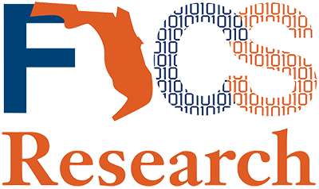
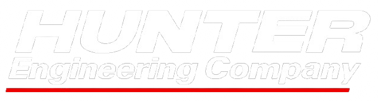

Welcome. I'm Ajay, glad you're here.
Software & Cloud Engineer
You don't need more code; you need systems that work. I'm a software engineer specializing in Azure cloud development, backend architecture, and enterprise-grade automation for large-scale, data-driven organizations. I build solutions that scale reliably in production, from serverless APIs and cloud data pipelines to identity-first workflows built on Entra ID, Azure Functions, SQL, and Azure DevOps.

Impact delivered at and trusted by


Featured Work
Innovative solutions that solve real-world problems
SommiScript — Lightweight Programming Language
Built a custom scripting language with Python/JavaScript-inspired syntax and a lightweight Java interpreter, making it easy to experiment with language design and execution.
Focus: compilers, expressiveness, experimentation
GatorGoods Marketplace
Full-stack MERN app for UF students to buy and sell items, with secure authentication, listings, and a clean API-first design.
Focus: auth, usability, full-stack design
Tire & Wheel Data Pipeline
Automated REST API pipeline that processed Hunter tire balance reports into Toyota/Lexus VPC systems, streamlining workflows for new vehicles.
Focus: efficiency, workflow automation
CosmosDB ➝ Azure SQL ETL
Cloud-based ETL pipeline transforming raw JSON in CosmosDB into relational models in Azure SQL, enabling faster analytics and cleaner queries.
Focus: cloud architecture, data modeling
Crash Fatality Analysis
Interactive analysis of vehicle fatality data (1996–2022), uncovering safety trends by make, model, and year to reveal gaps in official ratings.
Focus: data science, real-world insights
VehicleInsightHub
Dashboard for live vehicle monitoring — from fuel efficiency to tire pressure — turning raw telemetry into clear, actionable insights.
Focus: usability, real-time insights
"Reliability in software isn't a feature, it's the foundation."
Skills & Tools
Technologies I work with to build robust solutions
Programming
Cloud, Data & Databases
Frameworks & Libraries
APIs & Integration
DevOps & Tooling
Soft Skills
Experience
Professional journey through software engineering
(Details pending project completion)
What folks have to say
Feedback from colleagues and mentors
"Ajay consistently exceeded expectations ... always open to feedback, eager to learn, and quick to offer fresh ideas ... I highly recommend him to any organization seeking a talented and dedicated professional."— Barbara Russo, JM Family
"I had the pleasure of mentoring Ajay during his internship at JM Family, and he consistently impressed me with his strong work ethic and eagerness to learn ... Any team would be fortunate to have him!"— Saleem Nashawaty, JM Family
"Ajay created automation that moved quality assessment data into our repository and built reports that made a real impact for our team. His focus and resolve helped us make significant progress."— Daniel Donaldson, Southeast Toyota
"Ajay consistently demonstrated enthusiasm, determination, and strong data skills. His grasp of data structures and proficiency with Microsoft Power Suite significantly contributed to our project's success."— Naman Goyal, Southeast Toyota
"Ajay was a key member of our software team, taking ownership of projects and bridging knowledge gaps. His backend automation streamlined how parent and student information is ingested."— Garrett Tieng, Robotics For All
"Ajay demonstrated exceptional software engineering skills and a proactive, problem-solving approach. He delivered high-quality work and collaborated effectively across the team."— Valeria Pinatelli, Robotics For All
More on LinkedIn.
How I Operate
My engineering philosophy and problem-solving approach
First Principles Thinking
I break down complex problems to their fundamental truths and build solutions from the ground up. This approach ensures that every architectural decision serves a clear purpose and avoids unnecessary complexity.
- Question assumptions and established patterns
- Build from core requirements, not conventions
- Validate solutions against real-world constraints
Systems Over Code
I focus on understanding the entire system—how components interact, where bottlenecks occur, and how the solution scales. Code is just one part of a larger ecosystem that must work reliably in production.
- Map the full data flow and dependencies
- Design for failure and recovery scenarios
- Consider operational impact from day one
Pragmatic Innovation
I embrace new technologies when they solve real problems, not for their own sake. Every tool, framework, or pattern must justify its existence through measurable value to the project and business goals.
- Evaluate tools by problem-solving fitness
- Balance innovation with maintainability
- Measure impact before and after adoption
Reliability as Foundation
I build systems that work consistently under pressure. This means comprehensive testing, graceful error handling, and monitoring that provides actionable insights before issues become critical.
- Design for observability and debuggability
- Test at unit, integration, and system levels
- Plan for scalability from the start
Collaborative Problem-Solving
I believe the best solutions emerge from diverse perspectives. I actively seek feedback, explain technical concepts clearly to stakeholders, and build consensus around architectural decisions.
- Communicate technical trade-offs clearly
- Document decisions and their rationale
- Mentor others and share knowledge freely
Continuous Learning
Technology evolves rapidly, and I stay current through hands-on projects, deep dives into new paradigms, and understanding the principles behind emerging trends rather than just surface-level familiarity.
- Build side projects to explore new technologies
- Study foundational computer science concepts
- Contribute to open source and technical communities
Contact
Let's connect and discuss opportunities